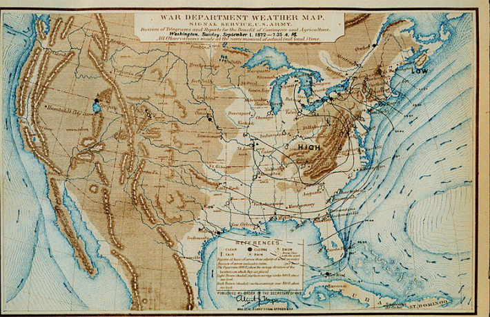

It’s easy enough to glance at a weather app on your phone and not consider all the work that went into the daily forecast you rely on.
Throughout the country, meteorologists at the National Weather Service, or NWS, keep a close eye on all sorts of helpful data gleaned from satellites, radar, and instruments on the ground and in the air—including weather balloons that soar more than 100,000 feet above the ground. They feed this information to various models to predict what your local conditions will look like in the coming days.
People in the United States didn’t always have a highly organized network of meteorologists to guide their outfit choices and warn them of dangerous storms. The foundation for the NWS kicked off in the mid 19th century, thanks to the recent arrival of the telegraph in the U.S. Volunteers around the country sent their weather observations to the Smithsonian Institution, which had provided telegraph companies with weather instruments. By 1860, 500 stations were delivering daily weather reports to a D.C. paper called the Washington Evening Star.

FIRST FORECASTS: An 1872 weather map from the agency that later became the National Weather Service. Image courtesy of the U.S. Army / Wikimedia Commons.
As this infrastructure swelled, so did the need for federal oversight. On this day in 1870, President Ulysses S. Grant signed a congressional resolution into law that required the Secretary of War to “provide for taking meteorological observations” throughout the states and territories, and to alert people on the coasts and at the northern Great Lakes of “the approach and force of storms.”
This responsibility went to the Secretary of War because “military discipline would probably ensure the greatest promptness, regularity, and accuracy in the required observations,” according to the National Oceanic and Atmospheric Administration (NOAA).
The first iteration of our weather service didn’t exactly roll off the tongue: It was known as The Division of Telegrams and Reports for the Benefit of Commerce. Later in 1870, “observing-sergeants” of the Army Signal Service took the first organized, synchronous weather observations in the U.S. and telegraphed them to D.C.
At that time, “little meteorological science was used to make weather forecasts,” per NOAA. “Instead, weather which occurred at one location was assumed to move into the next area downstream.” This meant that forecasts were relatively basic, mentioning factors like clouds and precipitation.
Read more: “The Secret Messages in Ancient Storms”
Two decades later, it became a civilian agency under the Department of Agriculture, and meteorology research began to make major strides. It wasn’t until 1970, though, that the agency took on the name of the National Weather Service, which was when the NWS settled into its new home under the recently formed NOAA.
Today, the NWS forecasts weather, climate, and water conditions like droughts for the U.S., its territories, and nearby waters. During dangerous weather, the agency serves as our official source of unfolding information.
But threats from the Trump administration have wreaked havoc on the NWS and its ability to support us in emergencies. Attacks on NOAA and NWS align with Project 2025, which claims the broader agency “has become one of the main drivers of the climate change alarm industry and, as such, is harmful to future U.S. prosperity.”
In early April 2025, the Trump administration seemed poised to purge around 20 percent of NOAA’s staff, and the NWS eventually lost nearly 600 employees. As a result, almost half of all NWS offices contended with serious vacancies.
Some of these offices could no longer run 24/7, and short-staffing reduced the number of weather balloon launches at certain locations—these are “typically the most important ingredient in making reliable model weather forecasts,” wrote meteorologist Jeff Masters for Yale Climate Connections last July. That’s because they collect information including air temperature, humidity, and air pressure from high up, offering a fuller picture when combined with data from the ground.
After public outcry and criticism from politicians, the NWS announced this past August that it would hire more than 450 “critical positions.” But as of December, that rehiring has moved slowly, and the agency doesn’t plan to replace all of the positions that were initially slashed.
The Trump administration also tried to slash funding for NOAA by 27 percent, along with significant cuts to other federal agencies’ budgets. But the Senate responded last month with a bill to fund these agencies through September 30—ensuring that, at least for the next few months, we’ll be as prepared as we can be to combat bitter cold, powerful hurricanes, and other weather emergencies that can put lives at risk. 
Enjoying Nautilus? Subscribe to our free newsletter.
Lead image: Danazar / Wikimedia Commons